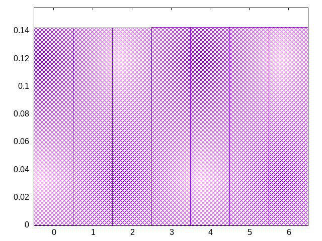
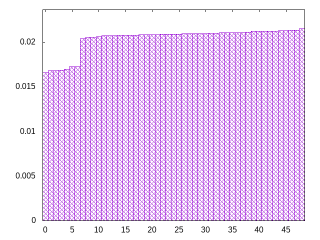
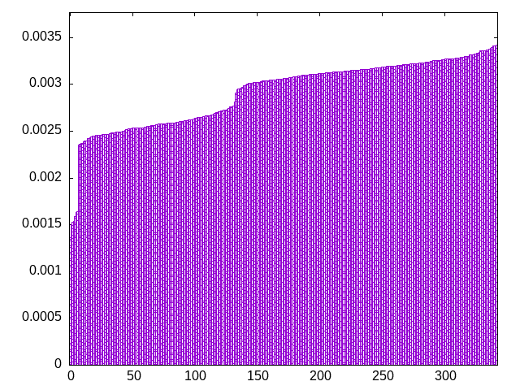
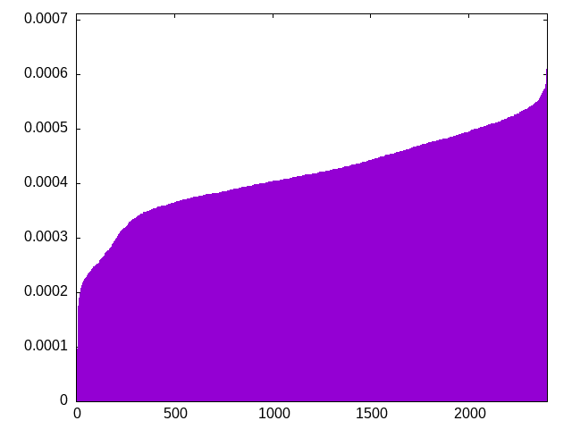

based on this reddit post
look at a big section of history, decreasing the chance for a piece each time it occurs (additive)
jojzttzsliiljlziosiltloszottzjjsoissjojzttztliiljlziosilljoszottzljsoissjojzttztioiljlzissilljolzottzijsolssjojzttztioisjlzizsilljolsottzijozlssjojlttztioisjlzizsisljollottzijozissjojlttztooisjlzizsisljzllottizjojisslojztttjooisilzozsisljzlltotizjljisszojjtttsooiiilzozsosljzlltotizjljisszsjjtttzooiiilsozzosljzlltotiojljisszsjjtttzloiiiszoztosljzllsotiojljioszsjjtttzlsiiiszoztooljzllsstiojljiotzsjjtitzlssiijzoztoollzjlsstiooljitlzsjjtitzsosiijziztoollzjlsstiooljitlzsjjtltzsosiijziztooolzjlsstisoljitlzzjjtltlsosiijziztooozjjlsstisoltijlzzojtltlsisoijziztzoosjjlsltisootijlzzojtltlsisjitzizizoosjjlslttsoozijlizojtltlstsjitzizizoosjjlsltzsoosijlizojtltlztsjitiztizoosjjlsltzsoosijlizojoltlztsjitiztizjoszjlsltzsoosijlitojolilztsjotiztizjzstjlsljzsoosijlitosolilzttjosiztizjzstjliljzsoosojlitjsolilzttsoilztizjzstjlitjzsoosojlijlsoliszttzoilitjzozstjlitjzsjosoljijlsoliszttzoilitizozstjlltjzsjosozjijlsolisittzoolitizjzstljltzlsjosozjijtsolisiltzoozititjzssljltzlljosozjijtsosijiltzoozititszlsljltz
bagginess: 0.0114
bagginess6: 0.2031
distribution1_maxgap: 7.299999999998974e-05
distribution2_maxgap: 0.003128003128003126
distribution3_maxgap: 0.000707001414002828
distribution4_maxgap: 6.700020100060299e-05
diversity: 4.9
entropy: 11.498
evenness_diff: 6.515
evenness_same: 5.345
maxdrought: 30.7
maxflood: 5
peakdrought: 0.0
repchance: 0.1184
seq4_coverage: 1.0000
seq4_follow: 6.527
distribution1_graph:

distribution2_graph:

distribution3_graph:

distribution4_graph:

similarity: (lower is more similar)
| 0.015 | deepbag_window10 |
| 0.016 | seamless_bag3_pure |
| 0.019 | shift10_5 |
| 0.023 | shift14 |
| 0.025 | balanced_long_mul_pure |
| 0.026 | wet3 |
| 0.027 | shift21 |
| 0.028 | deepbag_fixed10 |
| 0.030 | balanced9 |
| 0.037 | bag3 |
| 0.040 | deepbag_window7 |
| 0.053 | bag4 |
| 0.061 | seamless_bag2_pure |
| 0.103 | wet2_size100 |
| 0.121 | fullrandom |
| 0.122 | shift7 |
| 0.125 | bag2 |
| 0.131 | nes_pure |
| 0.152 | balanced7 |
| 0.152 | nes |
| 0.191 | fullrandom_pure |
| 0.282 | weight_lin_pure |
| 0.299 | deepbag_fixed7 |
| 0.305 | deepbag_window4 |
| 0.306 | balanced5 |
| 0.310 | weight2 |
| 0.359 | wet3_size12 |
| 0.425 | shirts_g3w7 |
| 0.443 | wet2 |
| 0.460 | seamless_deep_pure |
| 0.509 | weight |
| 0.558 | shirts_smooth_c10 |
| 0.618 | tgm_pure |
| 0.633 | tgm |
| 0.642 | deepbag_fixed4 |
| 0.681 | shirts_smooth_c12 |
| 0.682 | shirts_g1w7 |
| 0.718 | bag |
| 0.727 | bag_pure |
| 0.767 | shift3_5 |
| 0.856 | shirts_smooth_c8 |
| 0.862 | tgm_tap |
| 0.884 | tgm_tap_pure |
| 0.942 | shirts_smooth_c14 |
| 0.945 | shirts_g1w3 |
| 0.994 | weight_exp |
| 1.000 | ti |
| 1.009 | wet_pure |
| 1.054 | wet |
| 1.111 | weight_exp_pure |
| 1.273 | seamless_bag_pure |
| 1.556 | shirts |
| 1.759 | shirts_smooth |
| 2.127 | repeat_recent_pure |
| 2.677 | shift1_75 |
| 4.172 | repeat_last_pure |
| 8.838 | flatbag |
| 8.838 | flatbag_pure |